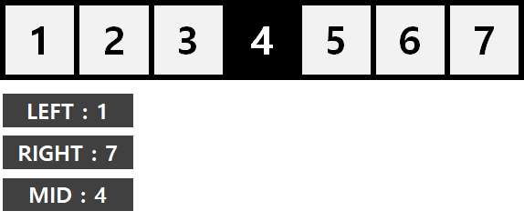
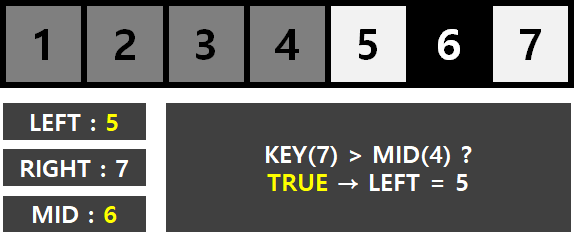
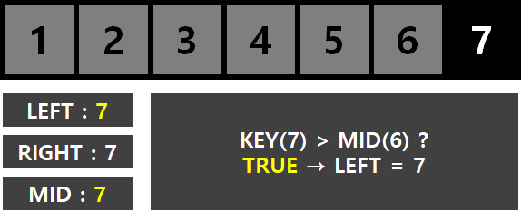
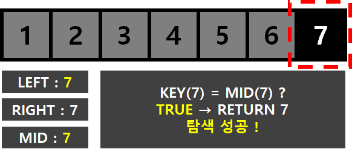

#1 이진 탐색 알고리즘이란?
#2 구현 with C/C++
[도움되는 자료]
선형탐색 알고리즘 [Linear Search Algorithm]
#1 이진 탐색 알고리즘이란?
이진 탐색 알고리즘 [Binary Search Algorithm] 이란, 오름차순으로 정렬된 자료구조에서 특정한 값의 위치를 찾는 탐색 알고리즘 입니다. 처음부터 끝까지 하나하나 모두 검사하는 선형 탐색 알고리즘 [Linear Search Algorithm]과 달리 , 처음에 중간값을 선택한 후, 그 값보다 작은지 큰지를 비교하며 탐색을 수행합니다. 단, 정렬된 상태에서만 사용할 수 있다는 단점을 가지고 있으나 선형 탐색 알고리즘에 비해서 키값을 찾는 연산이 반으로 줄어 원소의 개수가 늘어날수록 효율이 증가 한다는 장점을 가지고 있습니다.
정리하자면 이진 탐색 알고리즘은 절반은 나누면서 걸러내는 형식입니다. 원소의 탐색 과정을 순서로 나열해 보면 다음과 같습니다.
- 배열의 원소를 정렬한다.
- 배열의 중간값을 탐색한다.
- 중간값이 탐색값이면 탐색을 중단한다.
- 중간값이 탐색값과 일치하지 않는다면 중간값과 탐색값을 비교한다.
- 중간값 > 탐색값 이라면, 중간값의 오른쪽 원소들은 제외한다.
- 중간값 < 탐색값 이라면, 중간값의 왼쪽 원소들은 제외한다.
- 원소를 찾을 때 까지 5 ~ 6 과정을 반복한다.
오름차순으로 정렬된 배열 {1, 2, 3, 4, 5, 6, 7} 에서 7의 값을 찾는 과정을 그림을 통해 설명하도록 하겠습니다.
우선, 가장 좌측의 값을 LEFT 변수에 가장 끝 값을 RIGHT에 초기화 한 뒤 MID에 (LEFT+RIGHT)/2의 값을 초기화 합니다.

다음으로 중간값(4)가 탐색값(7)과 일치하는지 여부를 확인합니다. 중간값(4) 이 탐색값(7)보다 작으므로, 탐색값은 중간값보다 오른쪽에 존재한다는 뜻입니다. LEFT값을 중간값 + 1인 [5]로 업데이트합니다. MID의 값은 자동으로 (LEFT(5)+RIGHT(7))/2 = 6 이 됩니다.

중간값(6)이 탐색값(7)과 일치하는지 여부를 확인합니다. 중간값(6)이 탐색값(7)보다 작으므로, 여전히 탐색값은 중간값보다 오른쪽에 존재한다는 뜻입니다. LEFT값을 중간값 + 1인 [7]로 초기화 합니다. MID의 값은 자동으로 (LEFT(7)+ RIGHT(7))/2 = 7이 됩니다.

마지막으로 중간값(7)과 탐색값(7)이 일치하는지 여부를 확인합니다. 일치하므로, 탐색을 종료하고 7값을 리턴합니다. (만약 탐색을 끝까지 수행했는데도, 탐색값이 존재하지 않는다면 -1을 리턴합니다.)

사실 대부분의 언어의 라브러리는 Binary Search Library 탐색 메소드를 제공합니다. (C++ 의 STL 표준 라이브러리, JAVA의 Array클래스 등등...) 그래서 굳이 특수한 경우가 아니라면, 구현하지 않고 제공해주는 메소드를 사용하면 됩니다.
그러나, 직접 이진탐색을 구현하지도 못하는데 메소드만 사용하는것은 바람직하지 않으니 스스로 코드를 짤 수 있는 경우에만 사용하도록 합시다. :)
다음은 BOJ 2776 암기왕 문제를 풀이한 것인데, 이진탐색 알고리즘을 연습하는데 도움이 될 것입니다.
#2 구현 with C/C++
파라미터는 총 ①배열 ②배열의 길이 ③탐색값 3가지입니다.
int binarySearch(int arr[], int len, int key)
{
// 초기화
int left = 0;
int right = len - 1;
int mid;
while (left <= right)
{
mid = (left + right) / 2;
// 탐색에 성공한 경우
if (key == arr[mid])
{
return mid;
}
// 탐색값이 중간값보다 작은경우 (오른쪽 원소 배제)
else if (key < arr[mid])
{
right = mid - 1;
}
// 탐색값이 중간값보다 큰 경우 (왼쪽 원소 배제)
else
{
left = mid + 1;
}
}
// 탐색에 실패한 경우
return -1;
}